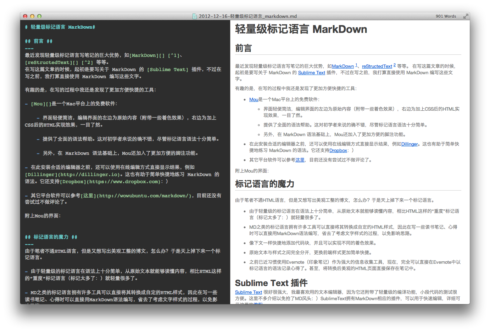

最近发现轻量级标记语言写笔记的巨大优势，如MarkDown1、reStructedText2等等。 在写这篇文章的时候，起初是要写关于MarkDown的Sublime Text插件，不过在写之前，我打算直接使用MarkDown编写这些文字。
有趣的是，在写的过程中我还是发现了更加方便快捷的工具：
Mou是一个Mac平台上的免费软件：
界面轻便简洁，编辑界面的左边为原始内容（附带一些着色效果），右边为加上CSS后的HTML实现效果，一目了然。
提供了全面的语法帮助。这对初学者来说的确不错，尽管标记语言语法十分简单。
另外，在MarkDown语法基础上，Mou还加入了更加方便的脚注功能。
在安装合适的编辑器之前，还可以使用在线编辑方式直接显示结果，例如Dillinger。这也有助于简单快捷地入门MarkDown的语法。它还支持Dropbox：）
其它平台软件可以参考这里，目前还没有尝试过不做评论了。
附上Mou的界面：

由于笔者不通HTML语言，但是又想写出美观工整的博文，怎么办？于是天上掉下来一个标记语言。
由于轻量级的标记语言在语法上十分简单，从原始文本就能够读懂内容，相比HTML这样的“重度”标记语言（标记太多了：）就轻量很多了。
MD之类的标记语言拥有许多工具可以直接将其转换成自定的HTML样式，因此在写一些读书笔记、心得时可以直接用MarkDown语法编写，省去了考虑文字样式的过程，以免影响思路。
像下文一样快捷地添加代码块，并且可以实现不同的着色效果。
原始文本与样式之间完全分开，更换前端样式更加简单快捷。
之前已近习惯使用Evernote（印象笔记）作为强大的信息收集工具，现在，完全可以直接在Evernote中以标记语言的语法记录心得了。甚至，将转换后美观的HTML页面直接保存在笔记中。
Sublime Text很好很强大，我最喜欢用的文本编辑器，因为它还附带了轻量级的编译功能，小段代码的测试很方便。这里不多介绍以免抢了MD风头：）SublimeText拥有MarkDown相应的插件，可以用于快速编辑，详细可见这里的教程。
首先需要安装Sublime Text的Package Control 在控制台( Control+` )中键入：
import urllib2,os;pf='Package Control.sublime-package';ipp=sublime.installed_packages_path();os.makedirs(ipp) if not os.path.exists(ipp) else None;open(os.path.join(ipp,pf),'wb').write(urllib2.urlopen('http://sublime.wbond.net/'+pf.replace(' ','%20')).read())
在Package Control中选择Install Package，查找MarkDownBuild,MarkDownPreview,MarkDownEditor安装。